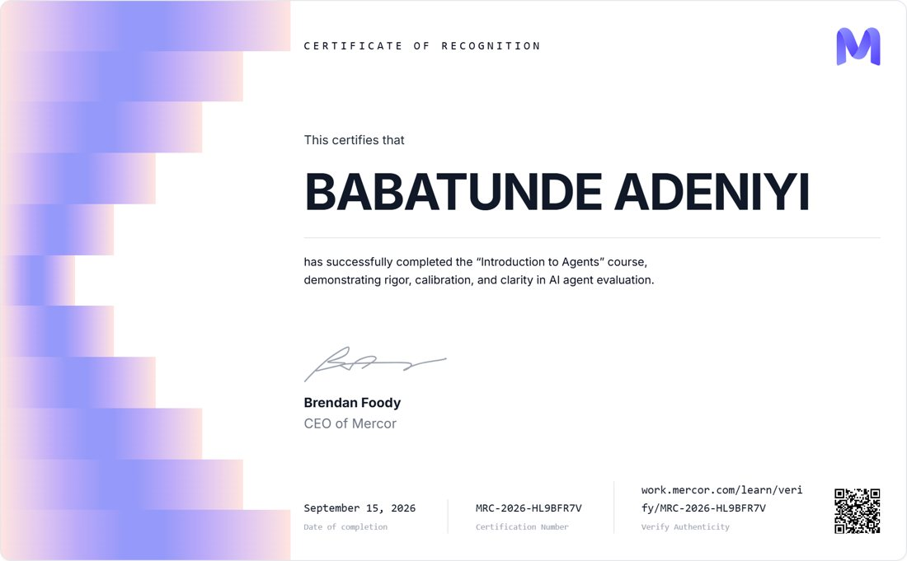
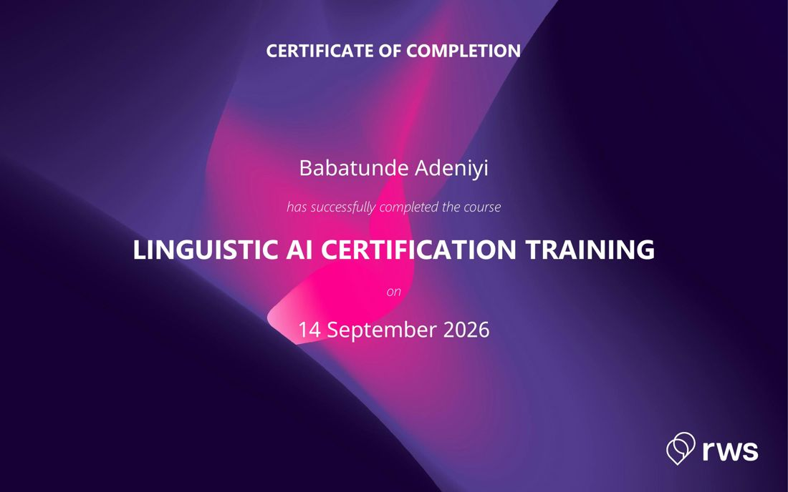
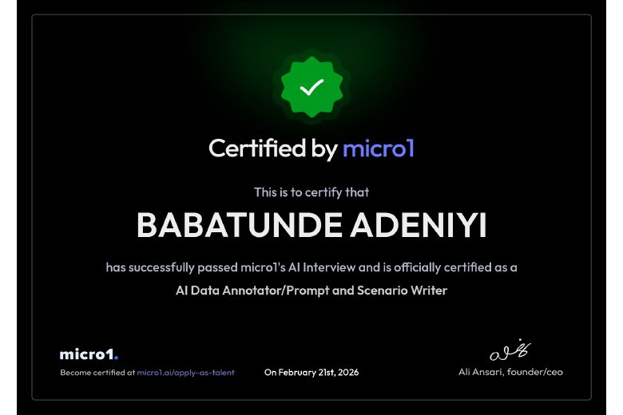

Adeniyi Babatunde
AI Data Annotator and Prompt and Scenario Writer
Credentials below are issued under the name Babatunde Adeniyi.
About
AI data annotator and content specialist focused on prompt creation, data annotation and media review across image, audio and video. I work on language identification, file summarization, transcription and speech rating, with a strong focus on accuracy, efficiency and detail in building high-quality datasets for AI and machine learning.
Certifications and progress

Mercor
Introduction to Agents
Completed the course, demonstrating rigor, calibration and clarity in AI agent evaluation.
Verifiable online September 15, 2026
Certification number MRC-2026-HL9BFR7V

RWS
Linguistic AI Certification Training
Certificate of completion for the Linguistic AI certification course.
September 14, 2026 Certificate image
View certificate

micro1
Certified AI Data Annotator / Prompt and Scenario Writer
Passed micro1's AI Interview and was certified for this role.
February 21, 2026 Certificate image
View certificate
Coursera
AI Learning Annotation and Linguistic AI
Course on AI annotation and linguistic AI.
Coursera
AI for Everyone
Foundational course on what AI can and cannot do and how it applies to work.
Experience
US English Transcription and Annotation Specialist 05/2026 – 08/2026
Argos US English Transcription and Annotation Project
Transcribed and annotated US English audio to project guidelines for punctuation, formatting and tags.
Applied precise timestamps to keep transcripts synchronized with the audio.
Reviewed transcripts for errors, timestamp inconsistencies, missing content and wrong tags.
Met audio-hour production targets and deadlines while preparing datasets for AI and machine learning.
Prompt and Scenario Writer 06/2025 – 09/2025
TransPerfect
Created custom prompts that target specific AI model needs across contexts, tones and intents.
Designed detailed scenarios that simulate real-world interactions for conversational AI.
Wrote prompts and scenarios in multiple languages to support multilingual NLP datasets.
Refined prompts using feedback and test results to align model output with project goals.
Freelance AI Data Annotator and Language Specialist 02/2025 – 08/2025
e2f
Provided data annotation, language identification and transcription on large-scale AI projects.
Reviewed image, audio and video against client guidelines and gave speech rating annotations.
Summarized large files and datasets into clear, usable key points for project teams.
Image Annotator Specialist 04/2024 – 06/2024
Kili Technology
Annotated images for computer vision and text for NLP, including sentiment and entity labeling.
Wrote guidelines and workflows to speed up annotation and ran quality checks across datasets.
Key achievement: scenario creator
Developed over 500 scenarios that mirror real-world interactions to improve model handling of diverse user inputs.
Reported a 30% increase in response relevance and engagement during testing phases.
Ran iterative review cycles that reduced scenario errors by 20%.
Skills
Annotation platforms Transcription tools Language identification Speech rating Media review Prompt creation Scenario writing Quality assurance Time management Creativity
Education and language
Bachelor of Science in Information Technology, Rufus Giwa Polytechnic 2018
English, native.
Select a certificate image to enlarge it. Where a certificate has an online verification link, it is shown next to that certificate.